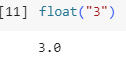
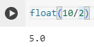

float()
The float function can be used to express output as a decimal. Instead of having output in integer form, it can be represented as a decimal. Take the two examples below. In the first image, we convert the string “3” to a float of 3.0. Note that instead of just converting to 3, the flaot function defaults at 1 decimal place so it just adds a zero at the end. In the second image, we also divide 10/2 and the answer is represented as 5.0, not 5.


Exit
Next
Back